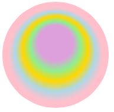

The Browser supports HTML5 canvas graphics. The canvas element provides a transparent painting surface on which newly placed graphic elements overwrite existing pixel data. To start drawing, specify the canvas's width and height to set the pixel dimensions of the painting surface:
<canvas id="graphic" width="320" height="370"> <!-- fallback content --> Sorry, your browser does not support HTML5 Canvas. </canvas>
The canvas's dimensions can be modified superficially via CSS, but changing the actual number of pixels clears any current image data. Here are two ways to shrink a canvas to half its size, the latter of which clears any displaying pixels:
var cv = document.querySelector('canvas'); // displays pixels: cv.style.width = Math.floor(cv.width / 2) + 'px'; cv.style.height = Math.floor(cv.width / 2) + 'px'; // clears pixels: cv.width = Math.floor(cv.width / 2); cv.height = Math.floor(cv.height / 2);
Use the canvas's two-dimensional context to access the API that modifies its contents:
var cv = document.querySelector('canvas'); var cx = cv.getContext('2d'); // canvas also available as cx.canvas
Note: Mobile browsers do not yet support the three-dimensional WebGL canvas context.
This section offers a brief tour of canvas's core graphics effects.
Paths
This simple example shows a series of graphic commands that draws the accompanying arrow:
| cx.fillStyle = 'red'; cx.strokeStyle = 'rgba(100%, 100%, 100%, 0.5)'; // semi-transparent cx.lineWidth = 10; cx.beginPath(); cx.moveTo(70,15); cx.lineTo(10,115); cx.lineTo(40,115); cx.lineTo(40,225); cx.lineTo(100,225); cx.lineTo(100,115); cx.lineTo(130,115); cx.lineTo(70,15); cx.closePath(); cx.fill(); cx.stroke(); |

After an initial beginPath() declaration, the moveTo() coordinate sets an origin point for the shape. The path is defined by a series of lineTo() coordinates, ended by closePath(). The shape only renders when either fill() or stroke() are called. Global properties such as fillStyle, strokeStyle, and lineWidth configure their appearance.
Since canvases are based on pixels rather than vector objects, most shapes you add cannot respond independently to touch input. However, the isPointInPath() method allows you to test whether a coordinate falls within the most recently declared path. The following touch handler, attached to the canvas element, responds only when the touch point falls within the arrow:
document.querySelector('canvas').addEventListener('touchstart', function(e) { if (! event.target.getContext('2d').isPointInPath( e.targetTouches[0].offsetX, e.targetTouches[0].offsetY ) ) return(false); // touch falls within arrow });
The targetTouches array further helps identify touch points that fall within the canvas itself. For more information, see Touch Gestures.
Rectangles
The rect() method defines a rectangular path that behaves the same way as the polygon above. It requires x and y offsets, followed by width and height. The fillRect() and strokeRect() methods provide common shortcuts, while clearRect() removes regions of pixels. (Adding transparent pixels does not change existing pixels.) This draws various rectangular patterns behind the arrow:
cx.fillStyle = 'lightblue'; // cx.rect(0,0,140,240); // cx.fill(); cx.fillRect(0,0,140,240); // same as 2 commented lines above cx.clearRect(20,20,100,200); // removes pixels cx.strokeStyle = 'gold'; cx.lineWidth = 6; // cx.rect(30,30,80,180); // cx.stroke(); cx.strokeRect(30,30,80,180); // same as 2 commented lines above // ...draw arrow |
Reading and Writing Images
To import an image into a canvas, reference its DOM object. This places the image at the top left corner:
var img = new Image(); img.src = "img/sign.jpg"; cx.drawImage(img,0,0);
Alternately, you can import another canvas object. With two additional measurements, drawImage() only renders the image within a specified width and height. With eight measurements, the first four specify the offsets and dimensions of the source image, and the next four specify the same for the destination canvas. This shows a 42 × 42 selection from the source image that is doubled in size and placed at the canvas's top left corner:
cx.drawImage(img,160,272,42,42,0,0,84,84); |
To save the contents of a canvas as a static image, use the canvas object's toDataURL() method. The canvas object is also available by calling context.canvas:
var img = new Image(); img.src = cx.canvas.toDataUrl(); // also toDataUrl('image/png') or toDataUrl('image/jpeg'); // toDataUrl('image/jpeg', 0.5) renders JPEG at "half" quality
This produces a data: prefixed encoding of the image data that can be substituted for an external filename. Here's an example of an image that's been modified to include the arrow:
Clipping Paths
The clip() method allows you to limit the scope of graphics operations to within the currently defined path. For example, after defining the path for the arrow as shown above, you can fill it with an image:
cx.beginPath(); // ...define arrow cx.endPath(); cx.clip(); // subsequent graphics appear only within path var img = new Image(); img.src = "img/sign.jpg"; cx.drawImage(img,-110,-200); // offsets to frame selected portion |
Arcs and Curves
Arcs offer another way to define a path. The arc() method accepts six arguments: a pair of x/y coordinates at the center point, a radius measurement in pixels, and a pair of start and end angles, originating from the right edge and measured in radians. A sixth boolean argument specifies if the arc renders along a counterclockwise path. The following shows a pair of arcs that specify a 5:00 position relative to the origin:
cx.beginPath(); cx.arc(50, 50, 40, 0, (Math.PI*5)/6, false); cx.closePath() cx.stroke(); cx.beginPath(); cx.arc(150, 50, 40, 0, (Math.PI*5)/6, true); cx.stroke(); cx.closePath() |
The arcTo() method accepts five arguments: a pair of x/y coordinates for a control point, another pair for a destination point, and a radius. It works differently than the arc() method, fitting the arc within the angle that forms between the starting point, the control point, and the destination point. This example compares arcs that are defined by the same set of control and destination points, but that vary in radius:
cx.arcTo(250, 50, 250, 250, 100); | cx.arcTo(250, 50, 250, 250, 50); |
The arcTo() method renders any necessary line leading up to the arc, but not following it. The quadraticCurveTo() method also requires coordinates for control point and destination point, and renders curves more flexibly:
cx.quadraticCurveTo(250, 50, 250, 250);
The bezierCurveTo() method works the same way, but uses an additional control point to define more complex curves:
cx.bezierCurveTo(250, 50, 50, 250, 250, 250);
Use the following interactive utility to see how various curves appear with different sets of control points, and see how they are reflected as JavaScript code. This example shows how arcTo() behaves when there's not enough room to place the arc between a set of control points.
Transforms and Canvas State
In the examples above, all new graphics are positioned relative to the canvas's default top-left origin point. Transforms allow you to shift this origin point, and rotate and scale the painting surface within the canvas prior to rendering a graphic.
In this example, invoking a series of transforms prior to drawing the arrow repositions, rotates, and shrinks it. (The second example highlights the transformed coordinate space.)
var deg = 120; cx.translate(180,240); cx.rotate((Math.PI/180) * deg); // requires radians cx.scale(0.5, 0.5); // show original dimensions: cx.strokeStyle = 'gold'; cx.lineWidth = 4;; cx.strokeRect(0, 0, cv.width, cv.height); |
Unlike CSS, subsequent transforms appear relative to the current transformed space, so resetting each to default values has no effect. To reset transforms to their original state, use setTransform() to specify a two-dimensional matrix using default values:
setTransform(1,0,0,1,0,0);
Matrixes provide an alternative mathematical representation that consolidates individual transform effects. The transform() method also accepts a 2D matrix, but makes only relative changes, as with translate(), rotate(), and scale(). (See the section on Level 3 CSS for an interactive demonstration of 2D matrix transforms.)
The save() method provides an alternate way to control transforms and other global properties. It pushes the current transform onto a stack of application states, and the restore() method pops the previous state. This example performs the same transform as above, but returns the canvas to its original state:
// ...render graphics within default coordinates... cx.save(); var deg = 120; cx.translate(180,240); cx.rotate((Math.PI/180) * deg); cx.scale(0.5, 0.5); // ...render arrow within transformed coordinates... cx.restore(); // ...render subsequent graphics within default coordinates...
Along with transforms, most of canvas's global properties can be altered and restored in this fashion.
Placing Text
Text behaves much the same as paths, applying the same global fillText() and strokeText() values as shapes you define. The font() method accepts the same syntax as shorthand CSS font properties, but with no support for custom fonts:
cx.fillStyle = 'red'; cx.strokeStyle = 'black'; cx.lineWidth = 1; cx.textBaseline = 'bottom'; cx.font = 'bold 40px sans-serif'; cx.fillText('You Are Here', 30, 100); cx.strokeText('You Are Here', 30, 100); |
Text appears at the specified coordinates, with textBaseline controlling how it is placed relative to the horizontal line starting from the y coordinate. The alphabetic baseline is a standard for Roman fonts, excluding descenders, and ideographic provides similar metrics to align CJK characters. The top and bottom baselines provide clearance around descenders and various accent marks, and middle falls between those two lines. The hanging baseline is for Indic scripts that fall from a baseline in much the same way that Roman characters rise from it.
Canvas does not provide any native method to wrap text. To check if text fits within the available area, use the measureText() method, testing the returned TextMetrics object's width value:
if (cx.measureText('This is Where You Are').width > 250) { cx.textAlign = 'center'; // 1st line: cx.fillText('This is Where', 160, 100); cx.strokeText('This is Where', 160, 100); // 2nd line: cx.fillText('You Are', 160, 150); cx.strokeText('You Are', 160, 150); } |
The textAlign() method specifies how text flows relative to the supplied x coordinate. It accepts left, right, center values, or locale-independent variants start or end.
Line Effects, Shadows, Gradients, and Patterns
The lineJoin property affects how angles appear along a path. It accepts round, bevel, and the default miter as values. With the lineJoin set to miter, setting an accompanying miterLimit limits the extent to which corners can extend from the joint before they are beveled. In this case, it affects only sharper exterior angles, not the square interior angles, or the path's origin point at the top of the arrow:
cx.lineJoin = 'round'; | cx.lineJoin = 'bevel'; | cx.lineJoin = 'miter'; | cx.lineJoin = 'miter'; cx.miterLimit = 2; |
The lineCap property affects how the end of a line appears. These examples show how various cap styles appear relative to the underlying line:
cx.lineCap = "butt";
cx.lineCap = "square";
cx.lineCap = "round";
Shadows apply to both fill and stroke effects, and are controlled with shadowColor, shadowOffsetX, shadowOffsetY, and shadowBlur methods. These examples show a crisp offset shadow along with a nono-offset blur:
cx.fillStyle = 'red'; cx.shadowColor = '#777777'; cx.shadowOffsetX = 6; cx.shadowOffsetY = 4; cx.fill(); | cx.fillStyle = 'red'; cx.shadowColor = 'black'; cx.shadowBlur = 10; cx.fill(); |
Gradients can substitute for standard fill abd stroke colors. The createLinearGradient() method defines start and end coordinates marking the gradient's dimensions. The CanvasGradient object it returns can be assigned to the fillStyle() method. The addColorStop() method defines colors for start and end states, and any others along the way. If the gradient's dimensions are smaller than the element it's used to fill, start and end colors extend to the edge. This example applies a transparent gradient to the bottom of the arrow, tapering off from approximately midway across the shape:
var g = cx.createLinearGradient(65,0,65,225); g.addColorStop(0, 'red'); g.addColorStop(0.5, 'red'); g.addColorStop(1, 'transparent'); cx.fillStyle = g; cx.fill(); |
The createRadialGradient() method requires six arguments: two sets of x/y coordinates and radius of each circle, but otherwise functions the same. This example renders a series of concentric color stops, slightly off center, within a clipped circle.
 | var g = cx.createRadialGradient(100, 100, 80, 100, 80, 30); g.addColorStop(0, 'pink'); g.addColorStop(0.25, 'lightblue'); g.addColorStop(0.5, 'gold'); g.addColorStop(0.75, 'lightgreen'); g.addColorStop(1, 'plum'); cx.fillStyle = g; cx.beginPath(); cx.arc(100, 100, 90, 0, (Math.PI*2)); cx.closePath() cx.clip(); cx.fill(); |
The createPattern() method offers another way to import images as repeating fill patterns. It accepts repeat-x, repeat-y, repeat (the default), and no-repeat as valid options.
var img = new Image(); img.src = "img/iconPattern.png"; var pattern = cx.createPattern(img, 'repeat'); cx.fillStyle = pattern; cx.stroke(); cx.fill(); |
Compositing
The globalCompositeOperation property changes how new graphics interact with what is already on the canvas. The default composite value is source-over:
cx.globalCompositeOperation = 'source-over';
The globalAlpha property specifies overall opacity for newly rendered graphics:
cx.globalAlpha = 0.7; // semi-transparent
Here is how it looks when you place a new image (the source) over an existing canvas graphic element (the destination) under various globalCompositeOperation settings:
| source-over | source-in | source-out | source-atop |
| destination-over | destination-in | destination-out | destination-atop |
| copy | lighter | xor |
Editing Selections
The imageData interface allows you to extract and replace rectangular selections within the canvas, and modify the pixel data.
The getImageData() method uses standard x/y offset and width/height arguments. The following extracts the entire canvas:
var imgData = cx.getImageData(0, 0, canvas.width, canvas.height);
Alternately, the createImageData() method makes a new, blank image with specified dimensions, which become available as width and height:
var imgData = cx.createImageData(w,h); // imgData.width == w; // imgData.height == y;
The data property gives you access to the image's pixel data. This yields a CanvasPixelArray object, a flat array that uses four values to represent each pixel, corresponding to red, green, blue, and alpha transparency values. This shows how to quickly access component color values for each pixel:
var imgData = cx.getImageData(0, 0, canvas.width, canvas.height); var data = imgData.data; // data is CanvasPixelArray var r,g,b,a; for (var i = 0; l = data.length; i += 4) { r = data[i]; g = data[i+1]; b = data[i+2]; a = data[i+3]; }
You can also access pixel values in terms of the image's width and height:
var imgData = cx.getImageData(0, 0, canvas.width, canvas.height); var data = imgData.data; var w = imgData.width; var h = imgData.height; var r, g, b, a; for (var y = 0; y < h; y++) { for (var x = 0; x < w; x++) { r = data[((w * y) + x) * 4]; g = data[((w * y) + x) * 4 + 1]; b = data[((w * y) + x) * 4 + 2]; a = data[((w * y) + x) * 4 + 3]; } }
To place the edited selection onto the canvas, the putImageData() method works the same as Reading and Writing Images {the drawImage() method described above}. The simple form positions the image at offsets x and y:
cx.putImageData(imgData, x, y);
This extracts a region from within the image, defined by iw and ih:
cx.putImageData(imgData, x, y, iw, ih);
This specifies both offsets (ix, iy) and dimensions (iw, ih) within the image selection:
cx.putImageData(imgData, x, y, ix, iy, iw, ih);
Canvas via CSS
On WebKit-based browsers, canvases can be referenced as background images. The getCSSCanvasContext() method allows you to create a canvas object directly within JavaScript, then reference its identifier ("shape" in this case) as a static image from within CSS:
<script> var cx = document.getCSSCanvasContext('2d', 'shape', 320, 370); // ...draw shape </script> <style> div { background-image: -webkit-canvas(shape) } </style>